Extras menu, from which the player can start the map editor.
Solo menu, from which the player should be able to start the gameplay in the future.
Extended settings menu
The player is now able to control the volume of the background sound via a slider.
An additional slider is implemented for controlling the volume of game sounds which arent implemented yet.
Following a short video to demonstrate the menu structure and the playing background sound.
Same starting positions
To ensure that the menu windows always have the same starting position, we pass the positions of the currently displayed menu window to the upcoming window
With self.getWindowPos() we can acquire the current position of the screen.
Including background sound
We work with a config file to save changes made in the options menu. How using the slider changes the value in the config file
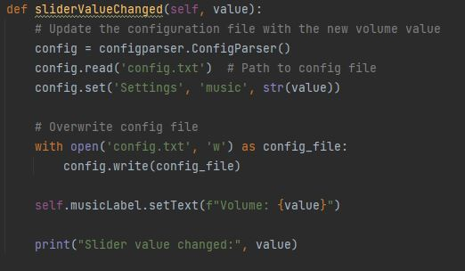
With config.set() we can change the value in the config file.
Config.write(config_file) overwrites the config file with the changes made.
Afterward, we visually present the changes to the player by updating the label to display the current volume.
Advantages of using a config file
It ensures, that setting changes made by the player will remain, even if the game is quit and restarted.
We can access the game sound volume just by importing and reading the config file.
Possible stretch goals
Currently our only entries are regarding the game sound.
A possible stretch goal could be, to provide players with the ability to modify the game controls through the options menu and save the changes in the config file.
To play the music we implemented a class MusicPlayer:
To play sounds we use the QMediaPlayer() class.
We implement a timer, so that the update_music() function is called every 500 milliseconds
A QMediaContent object is created which contains the by the path specified sound.
With following functions:
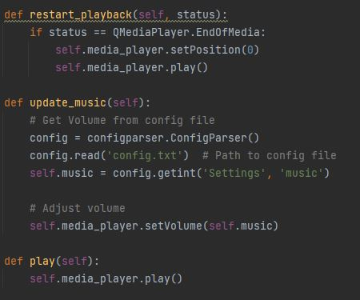 Restart_playback()
Restart_playback() causes the music to run in a loop.
It checks if the current played sound ended.
If this is the case, the soundtrack gets replayed by setting the position to 0.
Update_music()
Every 500 milisecond the update_music() functions reads the actual volume from the config_file.
With set_Volume() the volume of the QMediaPlayer() is adjusted.
Difficulties
Actually Finding an implementation where the music is played independently by the actions of the player in the main menu.
In previous versions the music didnt loop or got restarted every time a window(menu) is switched.
Among others we tried to use threads to play the music which didnt end up working.
Improving Map Editor and including it in the menu structure
Remade the UI of the mapeditor with qtdesigner.
Put the buttons in an non-drawable area to the right. Beforehand they were in the midst of the screen.
Implemented load function to convert an already saved txt.file back to a drawn arena.
First we open a dialog window, where the player can choose the respective map.
We set a name filter, so only txt. files are selectable.
The file is opened and newline and spaces are replaced.
We iterate through every letter in the file and color the respective tile.
The drawing mode and, consequently, the drawings change based on the letter.
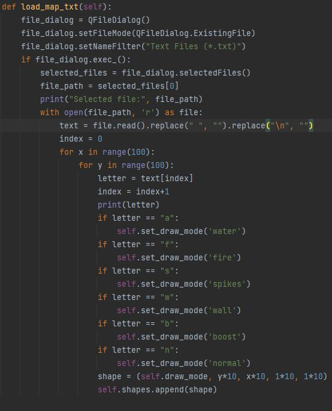
Video that showcases the load function and the new UI of the MapEditor:
Problem:
Circular dependency between the Menus.py and MapEditor.py file. Solved with following code line:
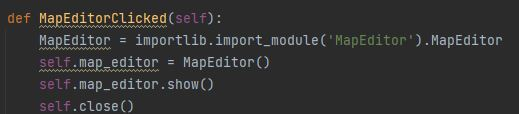
MapEditor only gets imported, when we actually switch to the MapEditor window.
Adding Health and Weapons (Marcel John)
added maxHealth and health as ints
added function to heal and deal demage
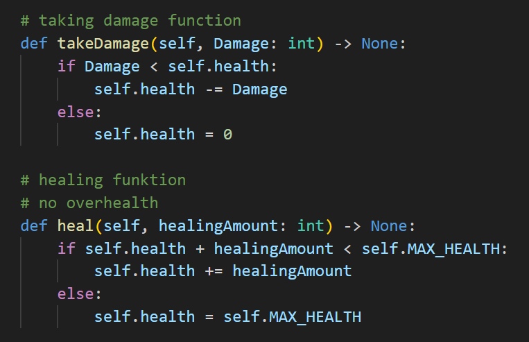
Weapons are objects we use enums to differentiate
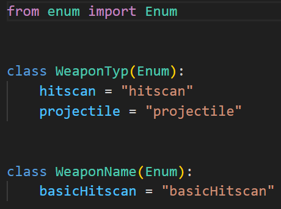
The Weapon stores the attributes
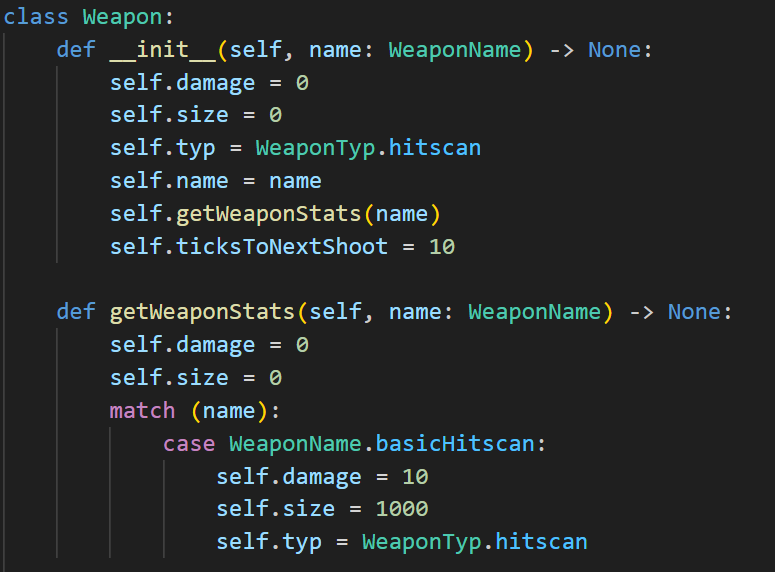
The inputHandler shoots the Weapon, also added a delay between shoots
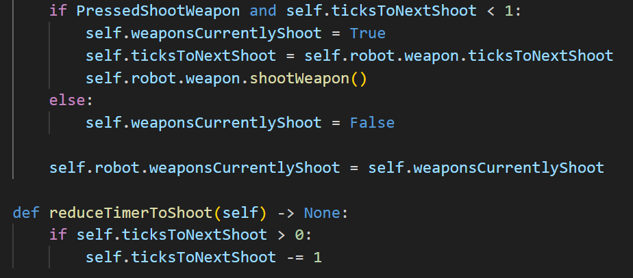
For the drawing added helper functions to calculate the position of the health bar and the end point of the shoot
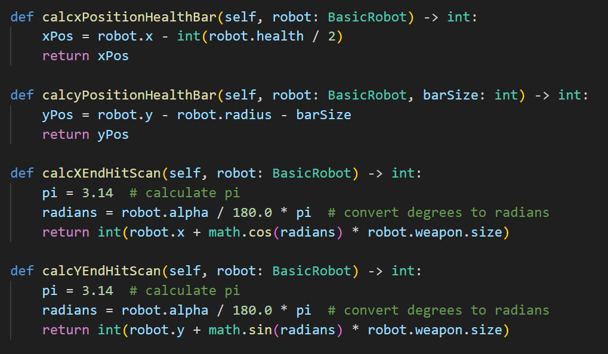
Drawing the healthbar and shoot
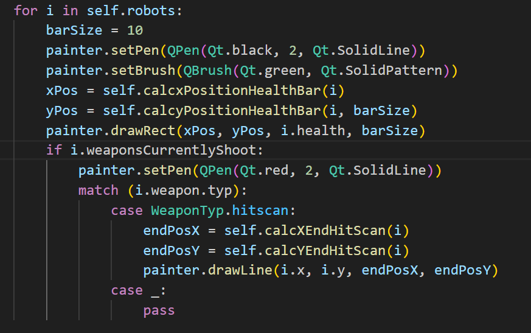
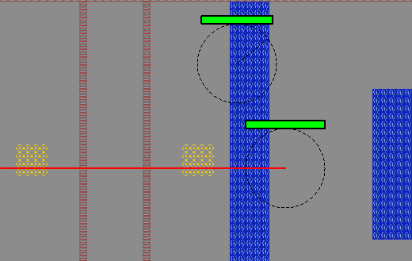
To calculate if we hit we use vector Math
we treat our shot as a line a vector ab and the robot we are checking
to ac from end shot to center of robot we calculate the length. Using the length we normalize the vector ab
to get the direction. We get the distance using the dotproduct of the normalazied vector and ac.
The distace on line function enshures the closest point is on the line.
Now we make the Projection vector using distance and the direction.
Using this vector we can find the closest point on the line to our circle.
Now we only need to cheeck if the closest point is closer than the raidius than we apply the damage.
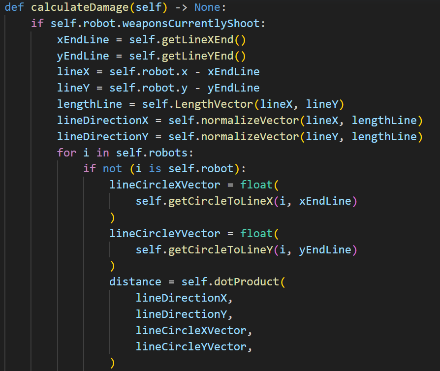
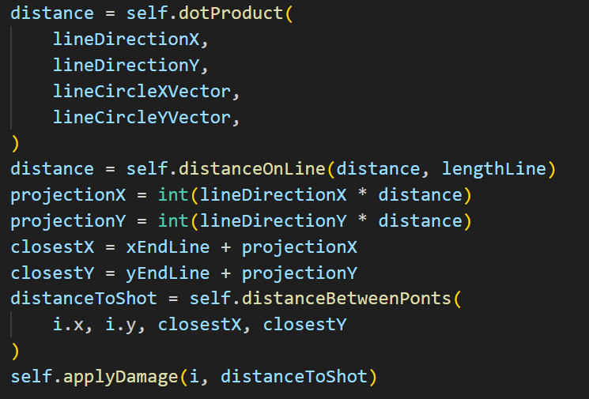
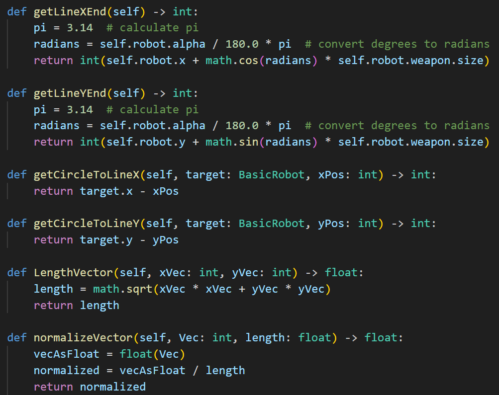
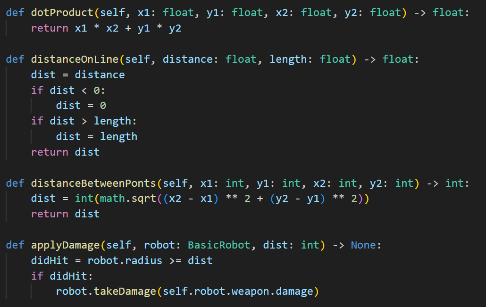